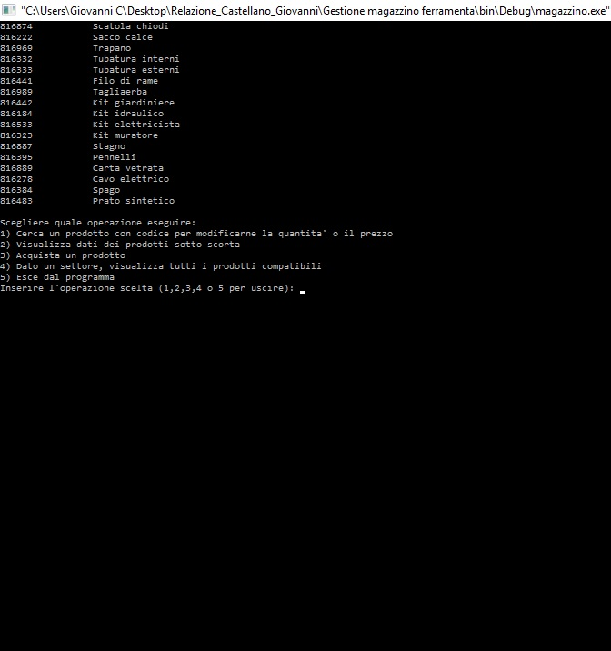

Screenshot
Il programma alla prima esecuzione si presenta così

La prima funzione richiamata è la funzione per la gestione
La seconda scelta richiama la funzione per i prodotti sotto scorta
La terza scelta permette di acquistare un prodotto
La quarta scelta mostra i prodotti in base al settore inserito in input